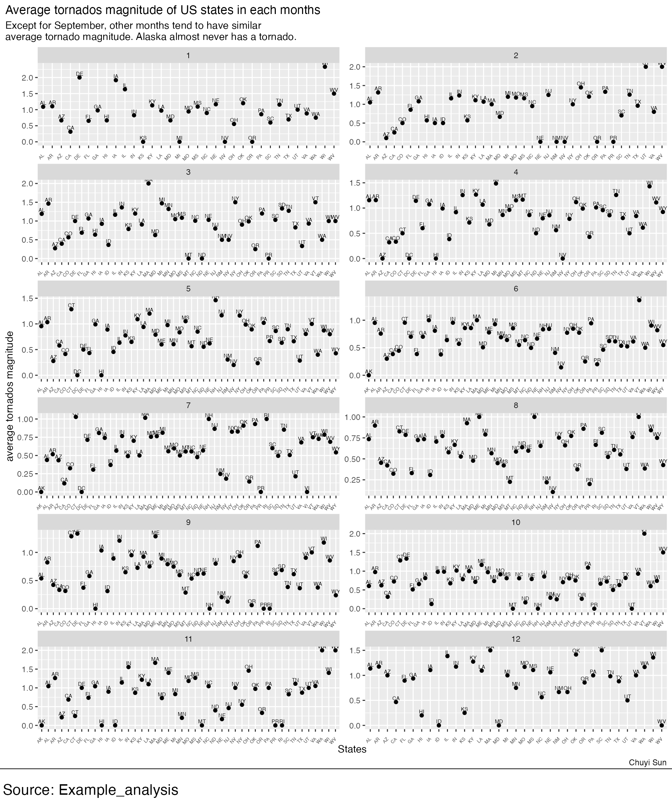

Example_analysis
Example_analysis.Rmd
library(bbplot)
library(here)
#> here() starts at /Users/chuyisun/Desktop/bbplot
library(ggplot2)
library(tidytuesdayR)
library(dplyr)
#>
#> Attaching package: 'dplyr'
#> The following objects are masked from 'package:stats':
#>
#> filter, lag
#> The following objects are masked from 'package:base':
#>
#> intersect, setdiff, setequal, union
library(lubridate)
#>
#> Attaching package: 'lubridate'
#> The following objects are masked from 'package:base':
#>
#> date, intersect, setdiff, union
library(forcats)
library(purrr)This analysis aims to explore the Tornados in United States, especially look at the tread of injuries and magnitude.
You must describe and link to where the original data come from that you chose. The dataset is from tidytuesday.here
The data dictionary is here
Load Data
if (!dir.exists(here("data"))) {
dir.create(here("data"))
}
files = c("tornados.rda")
if (any(!file.exists(here("data", files)))) {
tuesdata = tidytuesdayR::tt_load('2023-05-16')
tornados = tuesdata$tornados
# save the files to rda objects
save(tornados, file = here("data", "tornados.rda"), compress = "xz")
}
load(here("data", "tornados.rda"))Glimpse of data
map_chr(.x = tornados, .f = typeof)
#> om yr mo dy date time
#> "double" "double" "double" "double" "double" "double"
#> tz datetime_utc st stf mag inj
#> "character" "double" "character" "double" "double" "double"
#> fat loss slat slon elat elon
#> "double" "double" "double" "double" "double" "double"
#> len wid ns sn f1 f2
#> "double" "double" "double" "double" "double" "double"
#> f3 f4 fc
#> "double" "double" "logical"
## test NA
map(tornados, ~ any(is.na(.)))
#> $om
#> [1] FALSE
#>
#> $yr
#> [1] FALSE
#>
#> $mo
#> [1] FALSE
#>
#> $dy
#> [1] FALSE
#>
#> $date
#> [1] FALSE
#>
#> $time
#> [1] FALSE
#>
#> $tz
#> [1] FALSE
#>
#> $datetime_utc
#> [1] FALSE
#>
#> $st
#> [1] FALSE
#>
#> $stf
#> [1] FALSE
#>
#> $mag
#> [1] TRUE
#>
#> $inj
#> [1] FALSE
#>
#> $fat
#> [1] FALSE
#>
#> $loss
#> [1] TRUE
#>
#> $slat
#> [1] FALSE
#>
#> $slon
#> [1] FALSE
#>
#> $elat
#> [1] FALSE
#>
#> $elon
#> [1] FALSE
#>
#> $len
#> [1] FALSE
#>
#> $wid
#> [1] FALSE
#>
#> $ns
#> [1] FALSE
#>
#> $sn
#> [1] FALSE
#>
#> $f1
#> [1] FALSE
#>
#> $f2
#> [1] FALSE
#>
#> $f3
#> [1] FALSE
#>
#> $f4
#> [1] FALSE
#>
#> $fc
#> [1] FALSEPlot 1
FL%>%
ggplot(aes(x=yr, y=fl_mag_mean))+
geom_line()+
labs(title = "Florida average tornados magnitude from 1950-2020",
subtitle = "There is a decreasing trend from 1950 to 2020. The lowest period is around 2000.", x="years", y="average tornados magnitude", caption = "Chuyi Sun")+
bbc_style()+
theme(plot.title=element_text(size = 15))Plot 2
state_summary=tornados%>%
mutate(tz=as.factor(tz))%>%
mutate(st=as.factor(st))%>%
select(-c("slat", "slon", "elat", "elon"))%>%
group_by(st,mo)%>%
arrange(mag)%>%
summarise(state_mean=mean(mag, na.rm = T),.groups = "drop")
plot1=state_summary%>%
ggplot(aes(x=st, y=state_mean))+
geom_point()+
facet_wrap(~mo, nrow = 6, scales = "free")+
labs(title = "Average tornados magnitude of US states in each months",
subtitle = "Except for September, other months tend to have similar average tornado magnitude. Alaska almost never has a tornado.", x="States", y="average tornados magnitude", caption = "Chuyi Sun")+
geom_text(aes(label=st),size=2,vjust = -0.5)+
theme(axis.text.x = element_text(angle = 45, vjust = 0.5, hjust=1, size = 5))
finalise_plot(plot_name = plot1,source = "Source: Example_analysis",save_filepath = "state_summary.png")
Plot 3
tornados%>%
mutate(stage=case_when(yr>1949 & yr<1975 ~ "1950-1974", yr>1974 & yr<2000 ~ "1975-1999",yr>1999 & yr<2025 ~ "2000-2024"))%>%
select(stage, inj)%>%
group_by(stage)%>%
summarise(stage_sum=sum(inj))%>%
ggplot(aes(x=stage, y=stage_sum))+
geom_bar(stat="identity")+
labs(title = "Total injuries in tornados in every 24 years",
subtitle = "Between 1950-1974, there were a lot of injuries, and 2000-2024 had the lowest injuries. There is a decreasing trend over time.", x="States", y="average tornados magnitude", caption = "Chuyi Sun")Summary
We can see a decreasing trend in the magnitude of the tornados, therefore the trend of injuries is also decreasing. Besides, the reduction of injuries might be due to the development of prevention. Looking at the spread of the tornado in each month, except for September, other months tend to have similar average tornado magnitude.